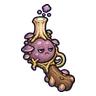

ปอดสปอร์
มอนธาตุพิษ Lv 36–44
เจอที่
| แมพ | โซน | Lv | ภูมิภาค |
|---|---|---|---|
| หุบสปอร์ม่วง | 36–42 | ป่ากองไฟ | |
| หุบสปอร์ม่วง | เห็ดหอคอยสปอร์ | 42–44 | ป่ากองไฟ |
ค่าสถานะตามเลเวล
| Lv | HP | ATK | DEF | MDEF | EXP | Job |
|---|---|---|---|---|---|---|
| 36 | 3,136 | 69–104 | 9 | 6 | 45 | 34 |
| 40 | 4,158 | 83–124 | 10 | 7 | 49 | 37 |
| 44 | 5,507 | 90–136 | 11 | 8 | 53 | 40 |
ตีด้วยธาตุไหนดี
แรงขึ้น: —
เบาลง: มืด ×0.5 อมตะ ×0.5 พิษ ×0
วัตถุดิบที่ดรอป
| ของ | โอกาส | |
|---|---|---|
| ถุงสปอร์ม่วง | 55% | 1 ชิ้น (15% ได้ 2) |
อุปกรณ์ที่ดรอป (1)
| ของ | โอกาส |
|---|---|
 ปืนพกคู่ปอดสปอร์ | 0.25% |
สกิล
กระโจน (Lv 25+) · กระโจน (Lv 60+)